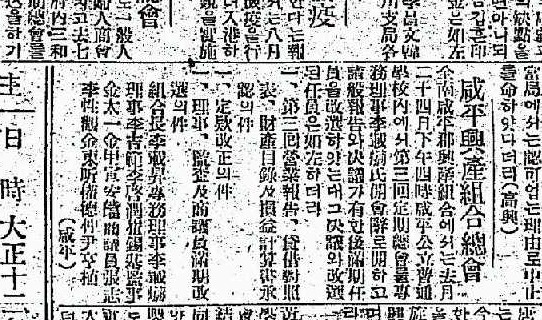
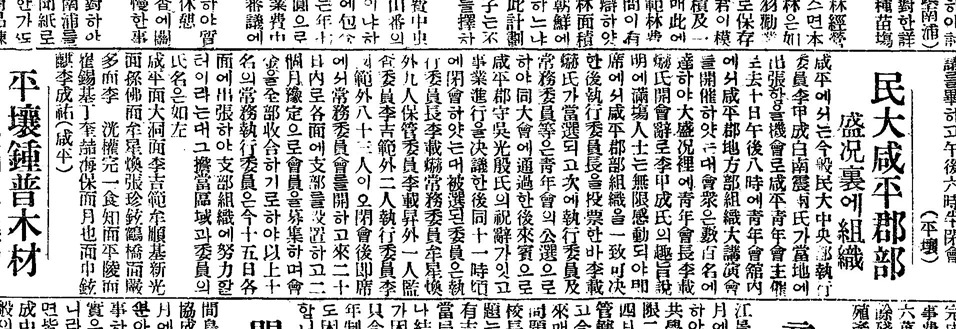

Chun-gang Lee Jae-seung — The Eldest Son Who Carried On the Head Family
The Lee Dong-beom Family of Hampyeong: A 128-Year Bond | Part 6
[EN] English edition · Translated from the Korean original · 한국어 원문
In Part 5, I followed the life of the "Jinsa Lee" of Baekbeom Ilji, my great-great-grandfather Seok-am Lee Dong-beom. This time I introduce his eldest son, my great-grandfather who inherited the head family house: Chun-gang Lee Jae-seung (春崗 李載昇, 1890–1962).
He was one of the young brothers learning to read and write in the house when Kim Gu stayed in Hampyeong in 1898, and also one of the two brothers who went to see Kim Gu in Seoul half a century later. I would like to trace the time in between, one step at a time, through the records that remain.
1. The Place of the Eldest Son
Lee Jae-seung was born in 1890 as Lee Dong-beom's eldest son. In 1898, when Kim Gu stayed at Jinsa Lee's house, he was about eight, and Baekbeom Ilji records the names Lee Jae-hyeok and Lee Jae-seung as brothers learning to read and write in that house.
The profile of Lee Dong-beom in the Maeil Sinbo of July 8, 1917, uses the phrase "his eldest son, Jae-seung" (長子載昇君). The article reports that Lee Dong-beom had entrusted household affairs to his eldest son, showing that the twenty-seven-year-old already stood at the center of running the head family household.
2. 1923: A Name That Appeared Twice
1923 was a year in which Lee Jae-seung's name appeared twice in the newspapers. On August 5 that year, the Dong-A Ilbo reported on the regular general meeting of the Hampyeong Heungsan Cooperative and recorded Lee Jae-seung as head of the cooperative.

On December 15 of the same year, the Dong-A Ilbo reported the organization of the Hampyeong County branch of the movement to establish a people's university (Minnip Daehak). It was a nationwide movement to found an institution of higher education by Koreans' own hands, and Lee Jae-seung was elected a custodian (保管委員) of the Hampyeong County branch.

In this organization, his younger brother Lee Jae-hyeok was elected chair of the executive committee and Lee Jae-seung a custodian. It is a record confirming that two brothers of the same family each took on roles in the People's University movement organization in Hampyeong.
3. Hampyeong Heungsan Co., Ltd.
On October 24, 1925, the Maeil Sinbo reported on Hampyeong Heungsan Co., Ltd., and recorded Lee Jae-seung as an adviser (相談役). The name of his younger brother, Lee Jae-hyeok, also appears in the same article.

In December of the same year, the Official Gazette of the Government-General of Korea (朝鮮總督府官報) published the company's registration of incorporation. The list of registered officers in the gazette, however, does not include an adviser, so Lee Jae-seung's title as adviser is confirmed only by the Maeil Sinbo article. We record separately the scope of what each of these two sources proves.
4. Chun-gang: The 1938 Article
On October 4, 1938, the Dong-A Ilbo's feature pages on Hampyeong carried a separate profile of Lee Jae-seung. Its title was "古道에 充實 春崗 李載昇氏" — "Chun-gang Lee Jae-seung, Faithful to the Old Ways." His pen name, Chun-gang (春崗), is also confirmed in this article.

The article states that Lee Jae-seung had served as head of Hampyeong-myeon during the Japanese colonial period. The exact term of service and his specific duties at the time, however, have not been confirmed and require further research. The activities related to the tenant farmers' association of the Gisan Farm (箕山農場), also mentioned in the same article, will likewise be verified separately for his role and actual activities.
5. 1946: The Brothers Who Went to Seoul
In 1946, after liberation, Lee Jae-seung went with his younger brother Lee Jae-hyeok to see Kim Gu in Seoul. The young brothers who had been reading at home half a century earlier, now past fifty, met their old guest again. The story of this reunion was told in detail in Part 3.[Note]
Whenever I picture this scene, I think about the length of time. From the two weeks of 1898 to the reunion of 1946, the person who bridged those years was the eldest son who kept the head family house — and that is something special to our family.
6. Remaining Questions
Lee Jae-seung passed away in 1962. The years of birth and death in this piece are based on the family register transcript (제적등본); the genealogy records his year of death as 1959, so there is a discrepancy.
Putting this together also made clear the questions still to be confirmed: his activities from 1926 to 1936, the period of his service as head of Hampyeong-myeon, his role in the Gisan Farm tenant farmers' association, and the history of the inscription "李東範 子 載昇" ("Jae-seung, son of Lee Dong-beom") said to be carved on a stone base at Tongdosa Temple in Yangsan, South Gyeongsang Province.
The principle of this series is not to fill periods where the record is blank with guesswork, but to write only as much as can be confirmed.
In the next part, I will introduce Lee Jae-seung's son, my grandfather Lee Sang-rae, whose name remains on the Gwangmyeong (光明) calligraphy.
Official interview, Kim Koo Museum & Library [Korean]
https://www.youtube.com/watch?v=NZlIOjAmNzg
See also
- Full archive (English): https://lsaru23-ai.github.io/hp-db-archive/en/
- Full archive (Korean): https://lsaru23-ai.github.io/hp-db-archive/
- X @hp_db_archive https://x.com/hp_db_archive
- Threads @hp_db_archive https://www.threads.com/@hp_db_archive
Previous
- Part 1: Who Was "Jinsa Lee"? — Kim Gu and the Lee Dong-beom Family of Hampyeong https://lsaru23-ai.github.io/hp-db-archive/en/post1.html
- Part 2: Why He Stayed Two Weeks — Hiding in Hampyeong, 1898 https://lsaru23-ai.github.io/hp-db-archive/en/post2.html
- Part 3: The 1946 Reunion and Gwangmyeong — A Bond Kim Gu Sought Out Again https://lsaru23-ai.github.io/hp-db-archive/en/post3.html
- Part 4: The Head Family House and the Lee Jae-hyeok House — 128 Years in Two Homes https://lsaru23-ai.github.io/hp-db-archive/en/post4.html
- Part 5: Seok-am Lee Dong-beom — The Life of "Jinsa Lee" https://lsaru23-ai.github.io/hp-db-archive/en/post5.html
Note
[Note] The original text of Baekbeom Ilji records the two men who came after liberation as Jinsa Lee's jongson, Jae-seung (在昇) and Jae-hyeok (在赫); but according to the genealogy and the 1917 Maeil Sinbo article they were Lee Dong-beom's sons, Lee Jae-seung (載昇) and Lee Jae-hyeok (載赫). In our reading, this appears to be an error in the original text.
Main references
[1] Maeil Sinbo, July 8, 1917, "全南名士 李東範氏."
[2] Dong-A Ilbo, August 5, 1923, article on the regular general meeting of the Hampyeong Heungsan Cooperative.
[3] Dong-A Ilbo, December 15, 1923, article on the organization of the Hampyeong County branch of the People's University movement.
[4] Maeil Sinbo, October 24, 1925, article on Hampyeong Heungsan Co., Ltd. / Official Gazette of the Government-General of Korea, no. 3988 (December 4, 1925), registration of incorporation.
[5] Dong-A Ilbo, October 4, 1938, "古道에 充實 春崗 李載昇氏."
[6] Kim Gu, Baekbeom Ilji, p. 127 and pp. 336–337.
[7] Family register transcript and Hampyeong Lee Clan Comprehensive Genealogy.
This piece distinguishes facts confirmed directly in documents from family tradition. The contents of the newspaper articles are based on the author's reading and will be supplemented according to additional sources.
This English edition is a translation of the Korean historical archive. The Korean original remains the authoritative version. Documentary evidence, family recollections, and unresolved questions are distinguished throughout.
Chinese characters given in parentheses after names and source titles are supplied for identification; they are not quotations from the original documents unless shown in quotation marks.